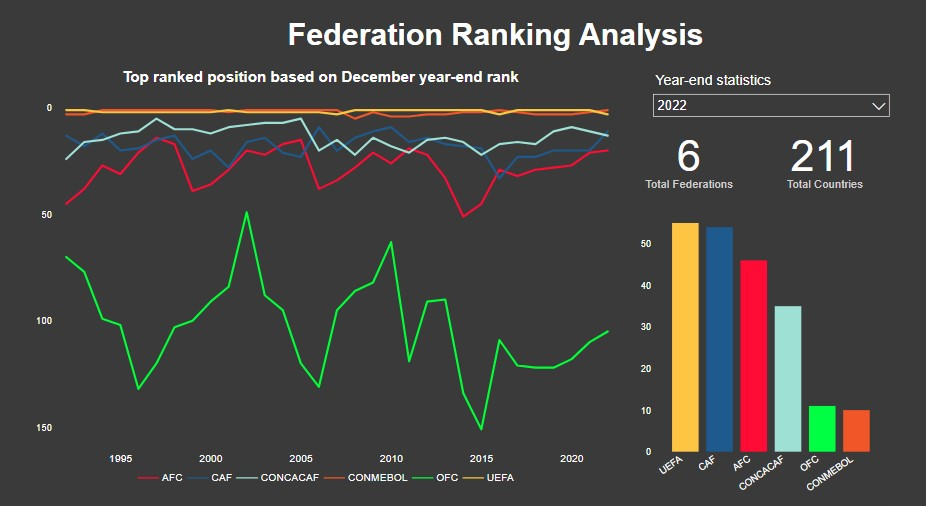
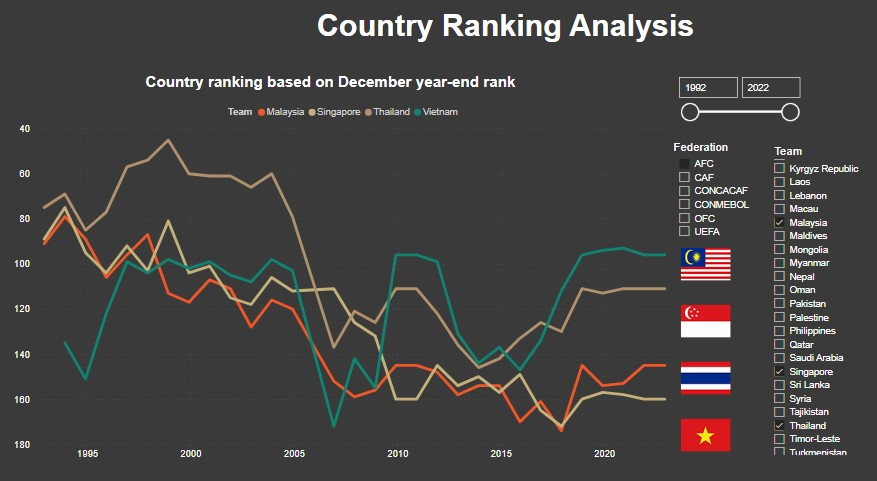
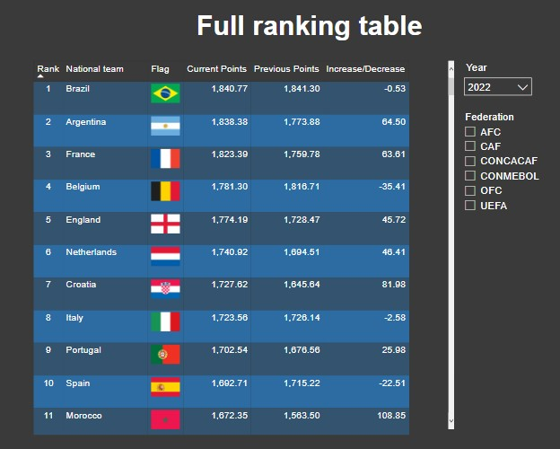
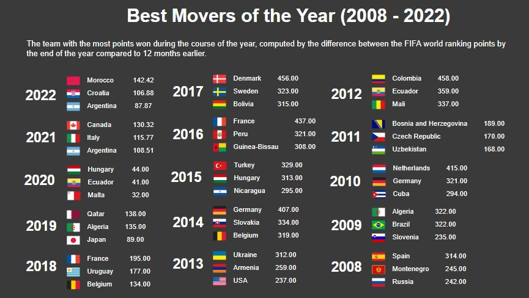

Scraping and visualizing FIFA men's world ranking data
1. Background:
This project is simply to refresh myself on web scraping, and while looking for a topic for experiment, I got curious about teams and their FIFA World Ranking, so I decided to attempt with this historical dataset. The ranking data can also be seen from the FIFA website.
2. Dataset Introduction:
2.1 The structure of FIFA website
The ranking data was tracked from 31 Dec 1992 up to 22 Dec 2022. Pagination is in place so only 50 teams per page. There are about more than 200 teams for each ranking period.
Example of FIFA men's ranking
 The rule for URLs format is as follows:
The rule for URLs format is as follows:
- 22/12/2022: https://www.fifa.com/fifa-world-ranking/men?dateId=id13869
- 06/10/2022: https://www.fifa.com/fifa-world-ranking/men?dateId=id13792
- ...
- 17/01/2007: https://www.fifa.com/fifa-world-ranking/men?dateId=id152
- 18/12/2006: https://www.fifa.com/fifa-world-ranking/men?dateId=id151
- ...
- 31/12/1992: https://www.fifa.com/fifa-world-ranking/men?dateId=id1
The rule for the URLs is "https://www.fifa.com/fifa-world-ranking/men?dateId=" + the id number. The number started from 1 for 31/12/1992 to 152 for 17/01/2007, then a random number.
Example of current paginated page

3. Data scraping with Python
Selenium Python package is used to automate and interact with web browser to scrap data. Power BI is used for data visualization. The source code can be found in the Github repo below.
3.1 Scraping process
- Retrieve the id numbers for all ranking periods
- Refresh the current page with current ranking period
- For each ranking period, navigate for all paginated pages to get all teams' information
- Update into the main dataset
3.2 Analysis of the HTML structure
The ranking periods with id numbers are setup in the JSON format (key value) and embedded in the script tag with ID "__NEXT_DATA__". Scraping these periods using Selenium webdriver find_element method.
Example of script tag to store ranking periods

Teams information can be retrieved from the HTML table row with class "row_rankingTableFullRow__Y_A4i". This can be done by using find_element method with CSS selector.
Example of teams information in HTML

Navigating to the next page can be done using the same find_element method with XPATH.
Example of paginated pages structure in HTML

Example of scraped dataset

3.3 Scraping data with concurrency or multi-threading
Basic scraping in Python is pretty easy and simple but it can be very time-consuming. There are many ways to enable the scrapping data with concurrency, and this project suggests to use the custom class to create instances representing thread workers.
4. Data Visualization
4.1 Data preparation
Scraped dataset is pretty much standard and clean except for the minor issues, and it be fixed using Python code
- The format of September is "DD Sept YYYY" which is different with other periods.
- The name of several countries should be standardized. For example, "Côte d'Ivoire", "Türkiye" can be replaced by Ivory Coast and Turkey.
Example of data relationship

4.2 Data visualization
Example of FIFA federation analysis
{kind=link}
Example of country analysis
{kind=link}
Example of full ranking table
{kind=link}
Example of best movers of the year
{kind=link}
To be continued.